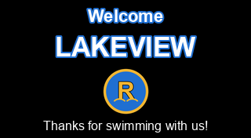
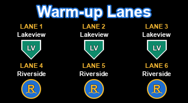
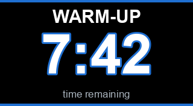
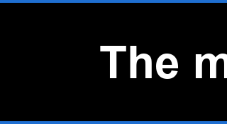
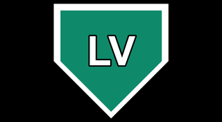

Put your meet on the board
Loop Builder makes the videos your pool scoreboard plays when it isn't showing times: welcome screens, warm-up countdowns, lane assignments, meet program QR codes and thank-yous.
Download Loop Builder
Free for Windows and Apple silicon Macs. Built for DisplayLink Plus boards.





Card: text in five fixed layouts, with your logo
320 × 176 pixels, shown exactly as exported
A seventh type, Board, draws a slide from one of your own DisplayLink Plus templates. The teams shown here are made up.